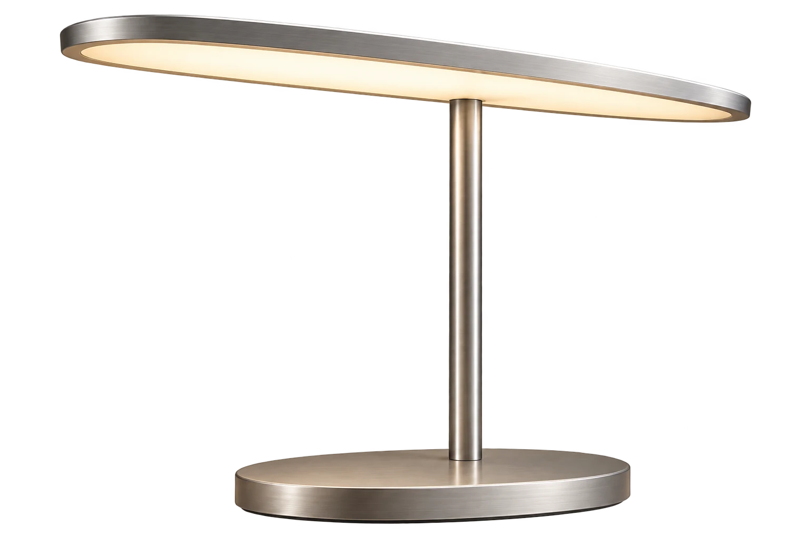
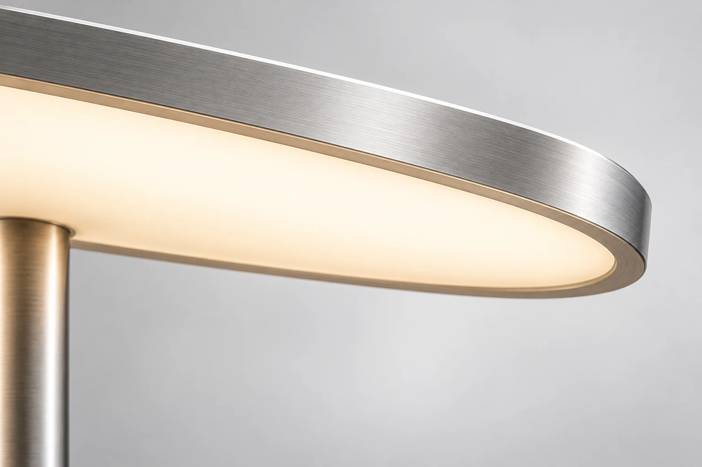
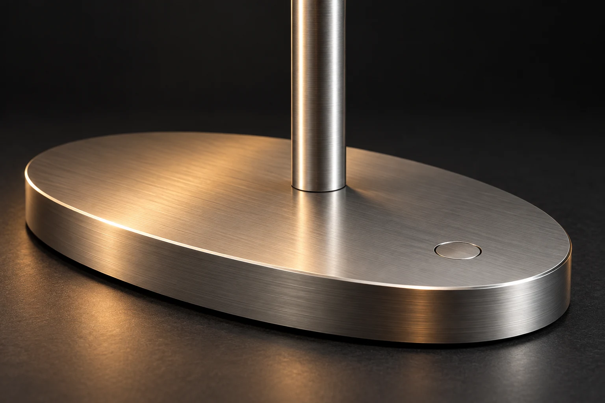
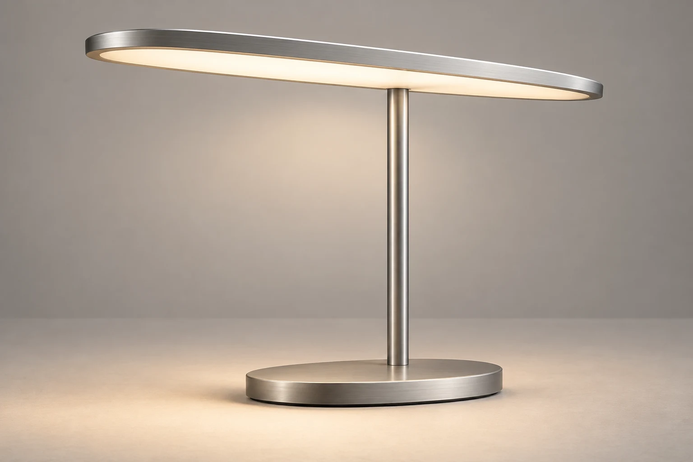
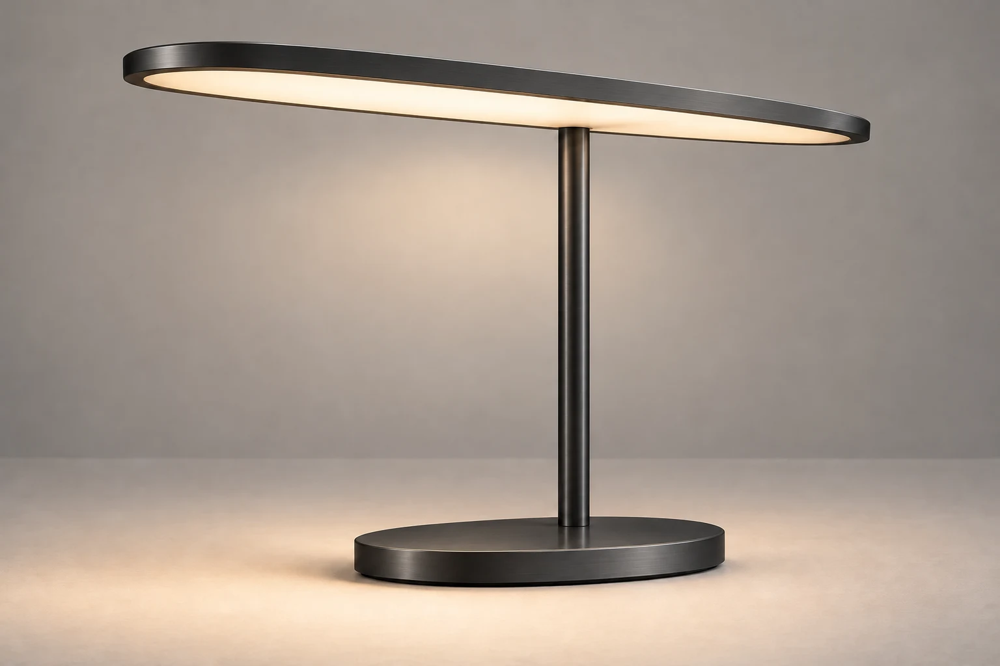

好光，自有分寸。铝合金机身 · 自适应光线
给日常，
留一束好光。
把复杂，
藏进简单。
一道弧面，一根灯杆，一处轻触。
从形态到触感，只留下刚刚好的部分。

薄一点，视野多一点。
光源收进纤薄弧面，让目光自由延伸。

手指，知道怎么做。
轻触开关，长按调光。熟悉的动作，就够了。
此刻，
你想要什么光？
让桌面清醒，让思绪沉静。
亲手调一束，属于此刻的光。
翻过一页，也慢下一点。3,500 K
柔和明亮
光效为屏幕模拟，实际观感因显示设备而异。
阅读模式，3500 K
少一点操作。
多一点自在。
设想一盏懂得日常的灯：环境变暗，光线自然补足；夜色渐深，色温缓缓转暖。你只管投入眼前。
- 随环境调光
- 感知桌面的明暗变化，保持舒适亮度。
- 跟随日夜节律
- 从清透的晨光，过渡到安静的晚光。
- 记住你的偏好
- 再次亮起，还是你喜欢的那束光。
你的桌面。
你的 AURA。
两种表情，同一种从容。


细节，
都有讲究。
AURA 概念规格
- 机身
- 阳极氧化铝合金
- 色温范围
- 2,700–6,500 K
- 调光
- 无级调光 · 环境光感应
- 尺寸
- 高 420 × 灯头宽 360 mm
- 额定功率
- 12 W · USB-C 供电
- 盒内物品
- AURA、USB-C 线、20 W 电源适配器
再多了解一点。
AURA 现在可以购买吗？
AURA 是一个虚构的高端智能桌面灯概念。本网站用于展示原创设计与交互，所有价格、规格和功能均为概念设定，不提供真实销售。
不连接手机，也能使用吗？
概念设计支持独立使用。底座轻触开关、长按调光，环境光感应和偏好记忆在本地运行，无需创建账号或连接手机。
网页里的光线体验真实吗？
体验通过图片色调与明暗模拟专注、阅读和放松场景。屏幕无法还原实际照明效果，显示的色温是概念参数，不是屏幕的实测色温。
网站会收集我的信息吗？
本页面不设置追踪 Cookie，也不收集姓名、邮箱、支付或订单信息。灯光与外观选择仅存在于当前页面，刷新后恢复默认；静态托管服务可能记录常规访问日志。